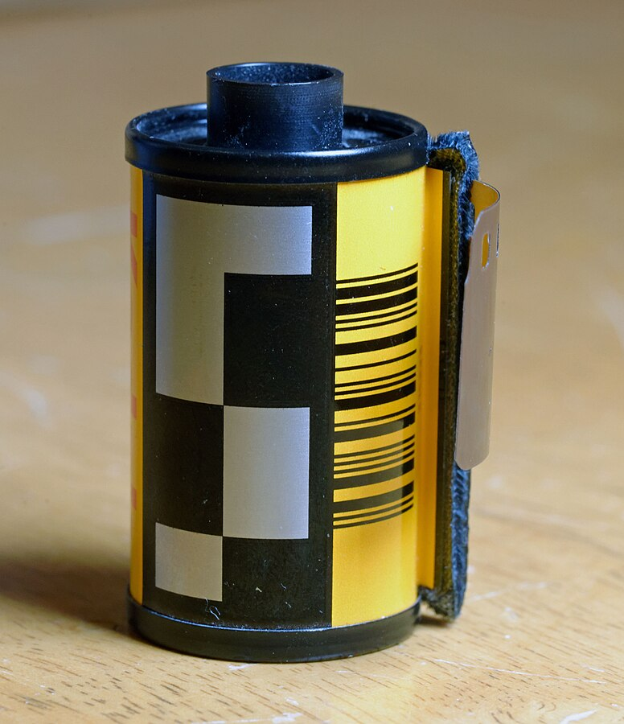

DX (Digital indeX) encoding is a kind of code that Kodak has introduced in 1983. Today it is found on almost every film cartridge, with that black and silver code on the side:
More on the wiki page, which I also used its tables to create this page: <DX Encoding>, specifically this page: <"Reading DX Camera Auto Sensing codes">
| F | i | l | m | U | p |
|---|---|---|---|---|---|
ISO:
DIN:
Exposures:
Exposure tolerance:
Made by nikeedev